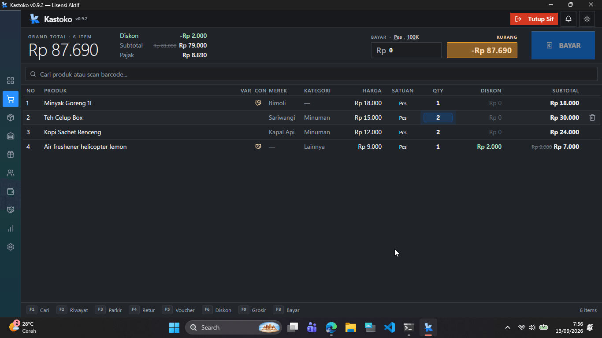
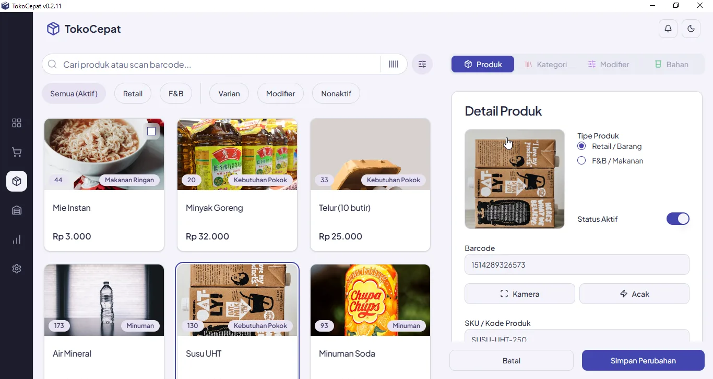
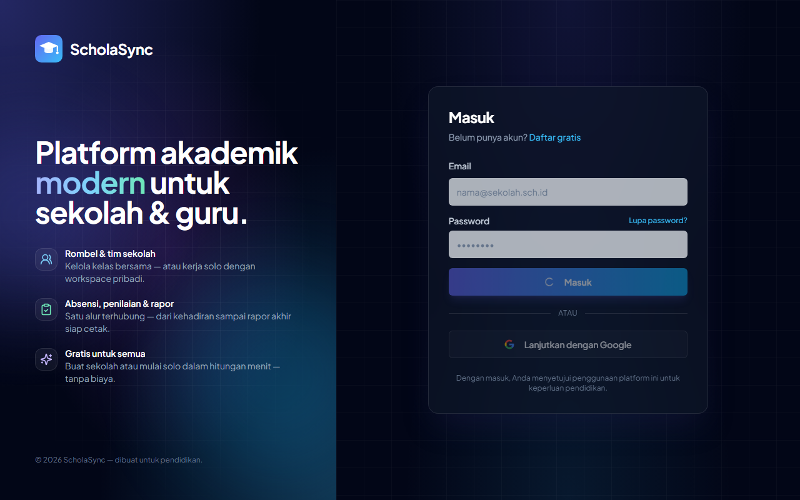
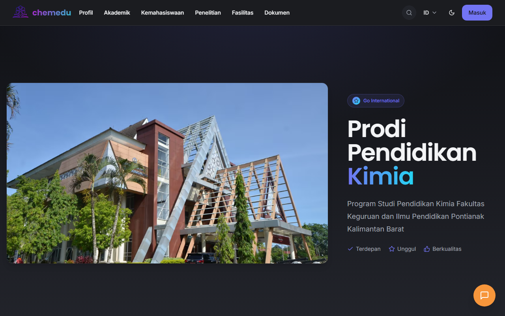
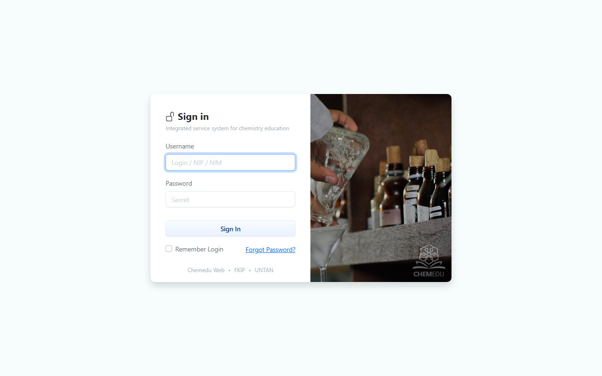
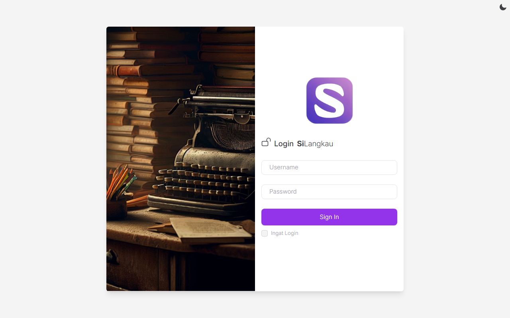

Full-stack Developer · Pontianak, Indonesia
Now: FireLite · Kastoko & TokoCepat · AI agents
Full-stack developer working across the stack — from an embedded document database (FireLite) to desktop apps (Tauri) and web platforms for education. Mostly JavaScript and Pascal, with a PHP past.
offline-first apps · embedded databases · dev tooling · education tech


App releases: github.com/rizaptk/tokocepat-dist · CI: github.com/rizaptk/kastoko-updates



